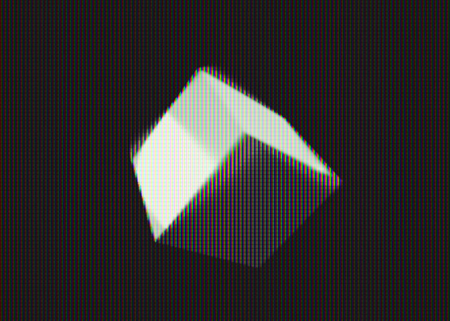
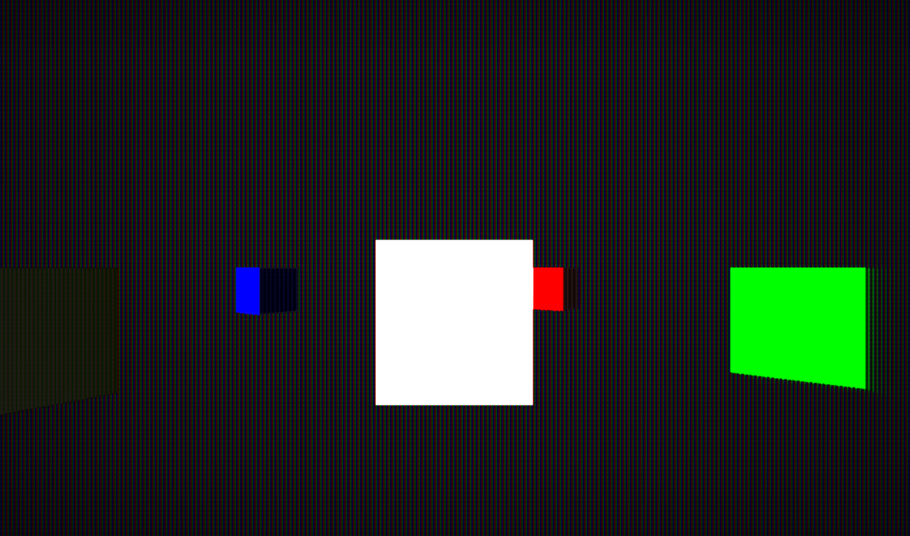
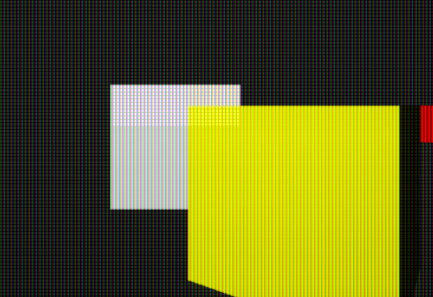
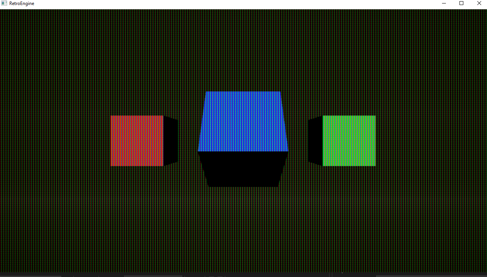
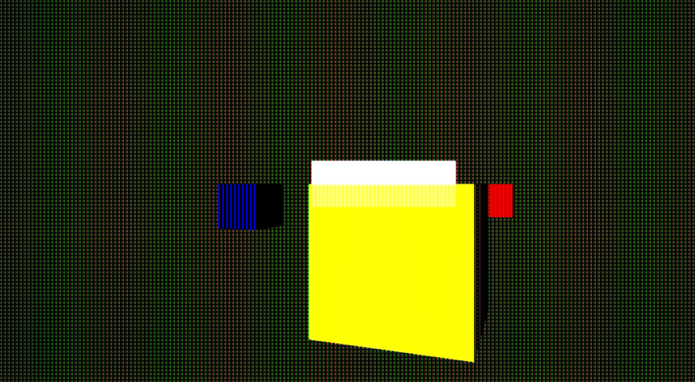
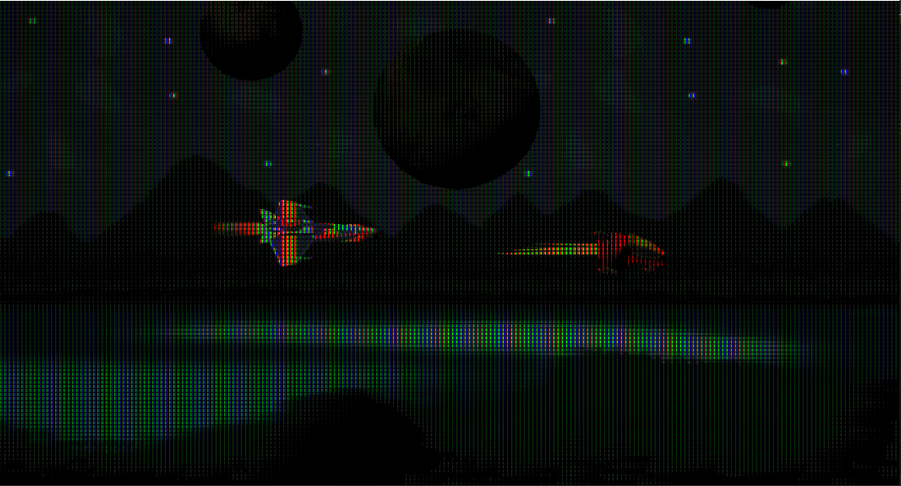

The Can of Worms I Wasn't Expecting
At this point, I wanted to improve one more aspect of the render pipeline before moving forward: persistence.
A subtle CRT ghosting effect when the camera moves. Bright objects leaving faint trails. The kind of thing you barely notice until it’s gone, but it just adds that subtle bit of life I'm looking to replicate.
On paper, this sounded like a small feature.
In reality, it turned into one of the most fragile, frustrating, and educational debugging sessions I’ve had so far. Rough prototypes of this seemed like it would work, but I wasn not anticiapteing what getting it good would take.

Early Success (and False Confidence)
The first versions looked promising.
Rotating geometry left trails. Camera motion felt more analog. It had that unmistakable CRT “memory.”
At the time, persistence was implemented as a feedback pass after the CRT emission stage. The idea was simple: take last frame’s phosphor output, decay it, and blend it back in.
Conceptually, this felt reasonable. CRTs retain light. So store light, fade it out, and reuse it.
But almost immediately, things started breaking in places that persistence should never have touched.
The Mask Starts Falling Apart
One of the first regressions was the phosphor mask.
Solid colors began filling in. Subpixel structure disappeared. Backgrounds showed strange artifacts.
This was a huge red flag. The mask had already been carefully fixed in the previous dev log.
Persistence was leaking light into places where no phosphors exist.
That meant energy which should have been spatially constrained was being reintroduced later in the pipeline, after masking, shaping, and tonemapping had already happened.
In other words, the mask was no longer a physical constraint. It had become a suggestion.

When Light Starts Doing Impossible Things
The next bug made it clear something was fundamentally wrong.
A white cube rendered behind a yellow cube… started showing up on top of it.
This wasn’t a depth issue. It wasn’t sorting.
It was light math violating basic rendering rules.
Values that should have only ever faded were instead being reinforced. Once that happens, ordering no longer mattered, brighter history could overpower current geometry regardless of depth. This was challenging.

Why Everything Turned Green
As fixes stacked on top of fixes, a new problem emerged.
Entire scenes developed a green tint out of nowhere. At this point I felt like everytime I put out one fire another one sprung up. Especially in shadows and neutral colors.
At first, this felt random. Nothing in the pipeline explicitly boosted green.
The root cause turned out to be something I had taken for granted: Rec.709 luminance weighting.
Using Rec.709 luma made perfect sense initially. It’s the standard for modern displays. It’s what GPUs, video encoders, and post-process pipelines are built around. If you need a perceptual brightness estimate, Rec.709 is usually the correct answer.
But Rec.709 is intentionally green-biased.
In its luma calculation, green contributes the majority of perceived brightness, followed by red, with blue contributing very little. That bias exists for good reasons in video compression and broadcast workflows.
The problem is that I wasn’t using Rec.709 for compression or display encoding. I was using it inside a feedback loop.
Persistence meant that every frame fed into the next one. Small per-channel differences didn’t just show up — they accumulated.
Green accumulated faster than red or blue. Over time, it simply won.
Nothing was “tinted” deliberately. The system was doing exactly what I told it to do. I just hadn’t accounted for how perceptual weighting behaves when reused as energy math.
The fix wasn’t removing luma entirely, but being far more careful about where and how it was used.
Luminance is now treated as a control signal — for gating, decay, and thresholds — not as something that directly feeds energy back into the system.
Once color was allowed to decay independently, without perceptual bias being reapplied every frame, the green drift stopped completely.


The Image Collapses
Attempts to fix the color drift introduced a new failure mode.
Scenes became darker. Then flat. Then nearly black.
At this point it was obvious: I wasn’t modeling persistence. I was creating an unstable feedback amplifier.
The core mistake was assuming persistence could be treated as additive light. Once light was reintroduced blindly, the system lost any notion of conservation or decay.

The Breakthrough: Persistence Is Not Additive
The turning point came from reframing the problem entirely.
Persistence should not add energy.
A CRT does not accumulate brightness. Phosphors on the screen get excited be electrons (it "remembers" where light used to be) and then they decay over time.
After a refactor, the final model treats persistence as a decay-only history buffer. Now on each frame:
- current beam emission is computed fresh, with no history influence
- previous phosphor output decays based on time, not frame count
- history only contributes where the current frame is dimmer than the last
That last constraint turned out to be critical. History is never allowed to overpower the present. That alone fixed a lot of the issues.
Once this rule was enforced, multiple problems vanished at once:
- infinite trails stopped immediately
- color drift disappeared
- mask gaps stayed dark
- brightness stabilized across scenes
Things got so broken at one point that objects effectively turned into paintbrushes, dragging color endlessly across the screen. That failure made the flaw impossible to ignore.
Seeing the Final Result
With persistence behaving correctly, the slider finally became intuitive.
Low values feel crisp. Higher values create visible analog memory. Nothing burns in. Nothing turns green.
This is the behavior I was after from the start. I did not expect it to take a few days to figure out though.
What This Taught Me
Persistence is not a blur. It is not blending. It is not a post-process.
It is a temporal system...and temporal systems amplify mistakes.
This work reinforced something important:
If a system feels fragile, it probably is. The hard part was identifying the contraint I forgot to enforce. And the fix didn't end up being some magical math, it was designing a better model that solved.
With this resolved, the CRT pipeline is once again stable, predictable, and visually trustworthy. Time to move on to building the game structure so I can start making stuff with this thing.